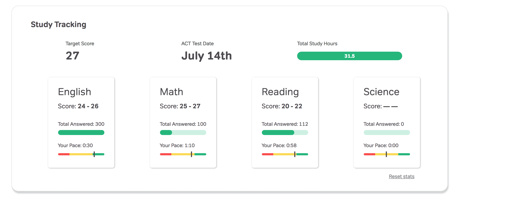

Study guidance for students in an unclear dashboard
Magoosh creates study materials and educational programs that prepare individuals for the next stage of their academic careers.
The online platform presents self-directed or guided programs of instructional content created in-house that help students improve test scores and stay motivated while studying for entrance exams.
I joined Magoosh as their sole designer and improved their mobile apps experience as well as redesign their high school products to better serve this audience.
Problem
How do I start studying?
High school students have told us that they’re confused about how to start studying in our product. This means that many of them are not studying with us even after purchasing an account. Unlike our graduate student users who are independent and self-motivated, high schoolers need more guidance throughout their studies—they also need help finding time in their packed schedules to prepare for their exams. The dashboard is the first page students see when they log into their account, and this is the experience we've targeted to improve their first impressions with Magoosh.
Objective
Increase study time
We worked to increase the total amount of time students spend studying in the product by 20%. Studying includes time spent viewing lessons or practicing questions.
Solution
Several months before this project, we ran an onboarding experiment to highlight our product features (video lessons, practice questions, and problem explanations) and explain to students how and when to use them. This experiment failed to increase product usage.
Forming a study habit
I took a more holistic approach to the student challenge of being confused by our product and unmotivated to study. We first needed to get students into their Magoosh accounts. Once they were logged in, we could encourage them to study and return.
Two-step solution
- Reminders - help students set up study reminders during onboarding by text message (their communication mode of choice)
- Motivation and a concrete timeline - show students their study progress and the countdown until their exam date

Multiple possible paths overwhelmed high school students.
The initial study choice is reduced to which subject to study.
The initial study choice is reduced to which subject to study.
How we got there
I was inspired by Nir Eyal’s habit-formation model of trigger, action, reward, and investment to help students develop a study habit with Magoosh.
Trigger
Our first hurdle was getting students to log into their account. Students admitted to putting off studying until the last minute. I also knew from our efforts to recruit students for interviews and testing that high schoolers respond better to text messages than email.
I designed a way for students to set up text message reminders that would be sent to themselves on the days of the week that they intended to study.
Action
The next challenge was to make getting started more straightforward. The original dashboard had too many options including links to lesson videos, practice questions by exam section, and a global navigation bar of additional pages to visit. We also learned that students would focus on one or two exam sections per study session
I reorganized the navigation by exam section rather than by product feature. After an exam section was selected, the option was a simple choice between whether to learn new concepts by watching lessons or to drill practice questions.

Exploring layouts that organize materials by exam section.
Exam section page with lesson and practice materials.
Exam section page with lesson and practice materials.
Reward
We didn’t know exactly what would motivate our students to feel successful, so we tested several options: showing students their progress towards a long-term goal such as reaching their goal score, indicating whether they were on track towards their goal with mid-term performance indicators, and allowing them to collect points within a study session for short-term gratification.
Most likely rewards acting on all three timelines, long, mid, and short, will be necessary to carry students through their studies. We are tracking how students engage with the different reward elements to determine how each impacts behavior.
Investment
As students move through the above steps of being reminded to study, taking actions in the product, and seeing the positive result of their actions, they become more invested in studying in Magoosh to achieve their goals.
Results
I ran this experiment as an A/B test with paying ACT students and increased their overall study activities by 30%.
I also looked at how often students studied on the days they set in their study reminders as well as how often they interacted with the mid-term progress indicators and points feature to understand the overall impact of the redesign.
My Role
Product designer
Tasks
Identify opportunity
Product audit
User research
Data analysis
UX UI design
Project management
Team
ACT content expert
Engineers (3)
Duration